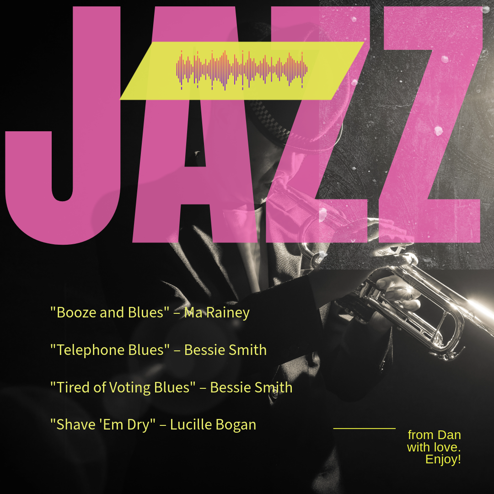
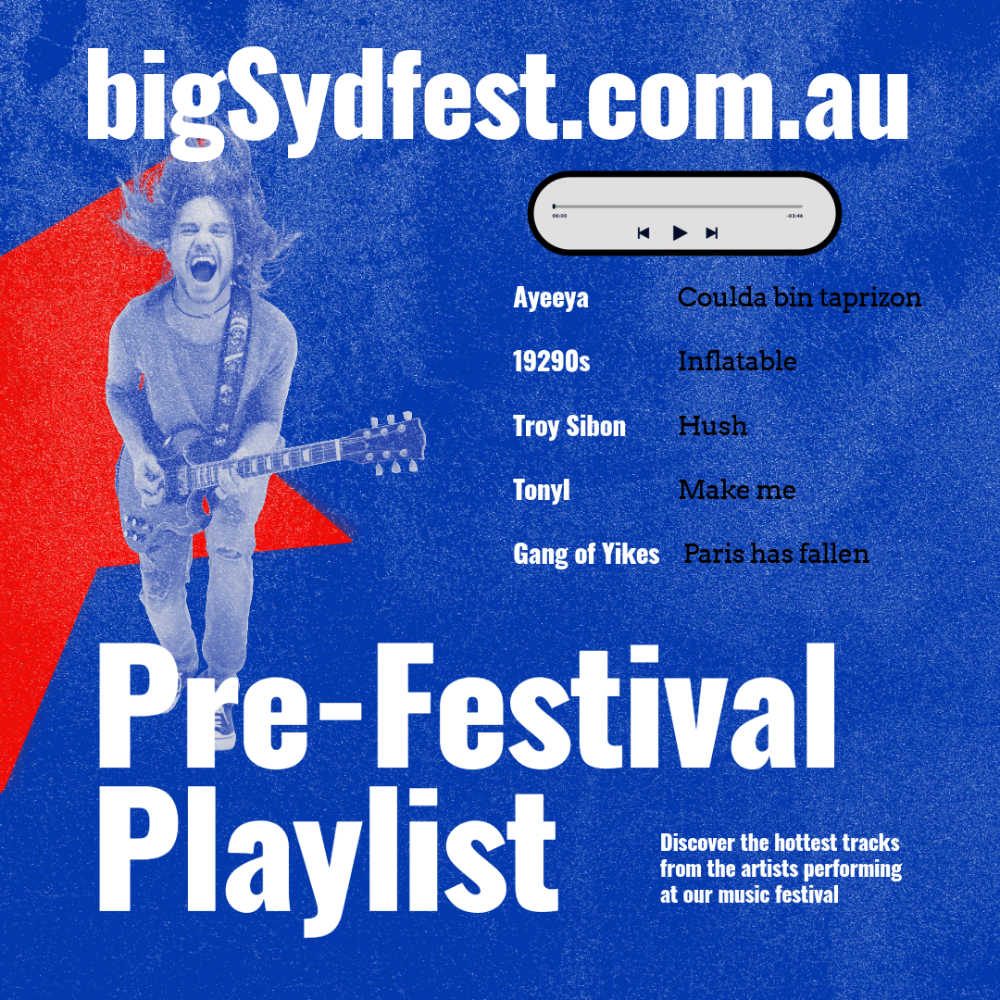
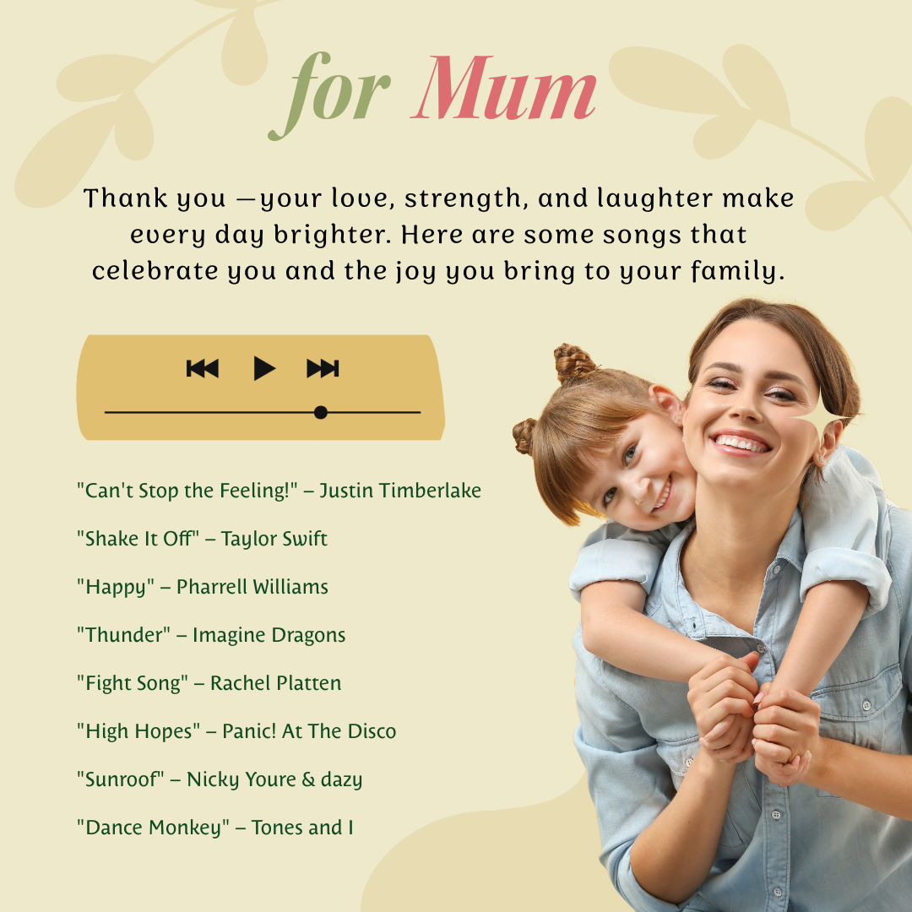

Community Vinyl Revival
If you love an artist, an era or a theme or purpose, upload their songs and create an environment. The possibilities are endless.
Accessible through QR codes at gigs or shared directly by artists.
New Australian musicians are doing it hard. AI systems are increasingly scraping and reproducing music without compensating the creators; the streaming economy is broken, with artists earning only cents per play and forced to rely on live performance to survive; major platforms like Spotify and YouTube Music act as gatekeepers, rarely surfacing local or emerging acts; and algorithm-driven recommendations overwhelmingly favour overseas artists, leaving Australia's music scene underexposed and culturally diminished.
Make your own app, personalise it, and control where it is seen, and when it is online or offline. The basic idea is that we create the code and a template — you provide the images, music, and style. We sit alongside you and teach you how to manage it, with cheat-sheets and AI assistants. You then own the code. For more, contact

If you love an artist, an era or a theme or purpose, upload their songs and create an environment. The possibilities are endless.

Give away teasers to entice people to come to your music festival or create a takeaway with the songs (perhaps live) from the event to keep fans engaged.

In the 70s we stood by the radio with a cassette player waiting for that favourite song; in the 90s people bought mp3s and made playlists for loved ones. Now you can buy songs from artists online, upload them to the app, choose your pictures, fonts and colours, and give a unique gift of music.